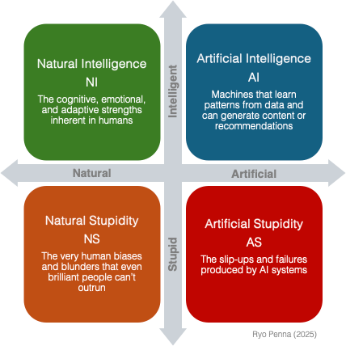

AI, Stupidity, and the Four Quadrants of Intelligence: An Objective Guide for Leaders
2025-03-06
“We are drowning in information, while starving for wisdom.” — E. O. Wilson

A Real-World Wake-Up Call
Imagine you’ve just deployed a flashy AI chatbot to handle your customer service. It starts great: instant replies, polite tone, and it never complains about overtime. But after a month, you start seeing bizarre interactions—like recommending random products, citing non-existent policy terms, and giving flat-out contradictory answers. You never told it to do that, so why is it happening?
The culprit: data mismatch meets lack of oversight . The chatbot was trained on half-baked content libraries, plus a chunk of user data riddled with misinformation. In other words, it’s the perfect storm of artificial intelligence gone wrong—and it’s precisely why we need a framework to understand how intelligence and stupidity, human and machine, can collide.
When we talk about “intelligence,” we often focus on how well someone or something can learn, reason, solve problems, and adapt. Yet, intelligence is not the entire story; its flipside—mistakes, errors in judgment, and outright failures—also deserves attention. Today, we have not just human (natural) intelligence and its pitfalls to consider but also the artificial equivalents.
With that in mind, I propose what I called the SAPIENT MATRIX :

The Four Quadrants: A Breakdown
Here’s a matrix to guide us through the interplay of human ingenuity and folly—plus the machine equivalents.
Quadrant 1: Natural Intelligence (NI)
Definition: The cognitive, emotional, and adaptive strengths inherent in humans.
The Vibe: Think of a savvy detective piecing together clues nobody else notices, an entrepreneur spotting trends that spreadsheets miss, or a teacher intuitively knowing which student is struggling emotionally.
Core Power: Humans excel at reading subtle social cues, reframing complex problems, and using empathy to navigate ambiguity—things AI still struggles to match.
Real-World Flair: During a crisis (like a major product recall), an experienced leader can read the room, calm fears, and pivot strategy on the fly. That’s pure NI—seeing the bigger picture and responding with both logic and empathy.
Quadrant 2: Natural Stupidity (NS)
Definition: The very human biases and blunders that even brilliant people can’t outrun—groupthink, wishful thinking, knee-jerk decisions fueled by ego, or simply clinging to a failing strategy out of pride.
The Vibe: Picture an executive team ignoring red flags because “We’ve always done it this way.” Or employees terrified to speak up about a disastrous pilot project because they don’t want to rock the boat.
Core Pitfall: Stubbornness, overconfidence, and fear. When these come together, well-intentioned humans spiral into flawed judgments—often embedding those mistakes into corporate culture and technology.
Real-World Flair: Recall a time your organization pumped money into a doomed project because nobody dared question the boss. That’s NS at scale.
Quadrant 3: Artificial Intelligence (AI)
Definition: Machines that learn patterns from data, identify anomalies, make predictions, and sometimes generate content or recommendations.
The Vibe: AI can scan millions of medical images faster than a swarm of doctors, forecast supply-chain disruptions, or even compose music that mimics a certain composer’s style.
Core Opportunity: Unmatched speed, consistency, and scalability—if guided correctly. AI frees us from grunt work and can open new frontiers in research, product design, and problem-solving.
Real-World Flair: From algorithms that outplay humans at chess and Go, to self-driving cars that react to road conditions in microseconds, AI’s potential to revolutionize entire industries is very real.
Quadrant 4: Artificial Stupidity (AS)
Definition: The slip-ups and failures produced by AI systems, often due to poor data, improper objectives, or a lack of guardrails.
The Vibe: It’s a robotic stock-trading algorithm tanking your portfolio because it misreads a rare market signal, or a language model confidently citing sources that don’t exist.
Hallucination Factor: Large-scale text models might fabricate answers—or “hallucinate”—when faced with incomplete or contradictory inputs. They may sound authoritative, but they’re basically making it up as they go.
Core Risk: AI can scale mistakes at warp speed. A small glitch or bias in your dataset can snowball into global fiascos once your system hits prime time.
Real-World Flair: A recruitment AI that inadvertently filters out qualified candidates because it “learned” from biased hiring histories. Overnight, you lose top talent and create an HR scandal.
Actionable Lessons for Leaders: Your Unified Playbook
Leaders love frameworks but often ask: “So what do we do about all this?” Below are practical, high-impact lessons that apply to the entire four-quadrant matrix—especially relevant if you’re looking to dodge fiascos and maximize ROI.
1. Insist on Radically Transparent Data
What It Addresses: NS meets AS. Human biases contaminate datasets, then AI amplifies them.
Your Move: Demand thorough “data audits” before any AI project. Get answers: Where does the data come from? Who labeled it? Where might it be skewed or incomplete? Transparency upfront saves you from scandal later.
2. Empower the Dissenters
What It Addresses: NS thrives where skepticism is squashed. AI fiascos often slip through when teams are too polite.
Your Move: Designate a “chief skeptic” (formally or informally). Let them push back on everything from data quality to project timelines. A bit of conflict in the boardroom can prevent catastrophic failure in the real world.
3. Merge Human Judgement with Machine Precision
What It Addresses: AI can process enormous amounts of data but may lack the context and intuition that only human insight provides. Just like the RAG (Retrieval-Augmented Generation) technique, which blends previously learned knowledge with active consultation of reliable sources to validate and complement its responses, integrating human judgment with automated analyses leads to more robust and secure decisions.
Your Move: In critical decisions, allow experts to review and interpret the alerts and insights generated by algorithms—much like RAG ensures the AI “assistant” accesses the most current and accurate information.
4. Create a Living Feedback Loop
What It Addresses: AI systems require frequent updates to avoid perpetuating errors or biases. Consider the R2L (Right-to-Left) technique: a simple shift in dividing numbers—prioritizing the most relevant digits—dramatically improved calculation accuracy (from 75% to nearly 98%). Similarly, maintaining a continuous feedback loop allows models to adapt as new data or environmental changes arise, ensuring AI effectiveness and accuracy over time.
Your Move: Don’t deploy and dash. Set up continuous monitoring of AI outputs. If a system starts to drift, or your environment changes (like a new product line), update the data and re-train the model. Stay agile.
5. Diversify Your Talent Pool
What It Addresses: NI can be enhanced or limited by the backgrounds and biases of those building AI.
Your Move: Recruit beyond data scientists. Bring in behavioral scientists, domain experts, ethicists, and frontline employees who truly understand user pain points. More perspectives = fewer blind spots.
6. Reward Curiosity Over Compliance
What It Addresses: Because NS often stems from fear of questioning authority, and AS from lack of continuous learning.
Your Move: Increase the conversational quality by questioning assumptions, and proposing new ideas. If your culture punishes curiosity, you’ll keep shipping flawed AI that nobody dares critique.
7. Stay Humble with an Iterative Mindset
What It Addresses: Overconfidence in AI leads straight to AS. Overconfidence in NI leads straight to NS.
Your Move: Regularly stress-test your systems (and your leadership assumptions). Schedule “AI meltdown drills” where the team tries to provoke errors or biases in the model. Each discovery is a learning opportunity, not a reason to panic.
The Connection Factor: Translating Talk into Tangible Gains
Alongside systematic checks and data vigilance, there’s another crucial layer. When communication is effective—by consistently aligning on purpose, exploring each other’s viewpoints, and adjusting based on real-time feedback—they unlock a deeper reservoir of clarity and speed that safeguards both the organization and its bottom line.
Harnessing Value Through Connection
Every time you bring people together to examine challenges and co-create solutions, you’re lowering the risk of overlooked details, miscommunication, or hidden biases. This form of alignment often reveals fresh angles no one would’ve caught alone. In the long run, it shortens project cycles and averts costly do-overs
that drain budgets.
Practical Recommendations for Productive Conversations
How Much We Listen Is How Much We Learn
Innovation rarely emerges in a vacuum. It thrives in a culture of curiosity—both about deliverables and about people’s deeper purposes, concerns, and circumstances. When you listen openly, you expose blind spots and spark ideas that data alone can’t reveal.
The Conversations Are the Work
If your team isn’t excellent at timely, results-oriented conversations, they’re primed to be outpaced by AI. Machines excel at tasks, but humans excel at shared inquiry. Regularly invest in building skills—asking better questions, giving clearer feedback—to keep the organization’s collective intelligence ahead of automated solutions.
Accountability Means Commitment, Not Compliance
True accountability is built on commitment. People who merely comply do the minimum. Those who commit bring fresh thinking and deliver surprising, high-value results. Align on shared goals so that each individual’s responsibilities feel purposeful, not dictated.
No Progress Without Appreciation
We all improve more through our strengths than our weaknesses. Recognize each person’s authentic contribution—beyond surface-level compliments—and you elevate morale, engagement, and performance. This sense of appreciation feeds a supportive atmosphere where individuals feel free to test ideas and refine them quickly.
A Competitive Edge You Can Bank On
By weaving genuine connection into day-to-day operations, organizations see waste dwindle: fewer duplicated efforts, less indecision, and minimal unproductive conflict. That doesn’t just protect the bottom line; it can amplify profit margins. Projects finish closer to deadlines, come in under budget, and keep stakeholders satisfied. Even better, teams remain nimble—spotting risks earlier and driving innovation faster than rivals mired in bureaucracy or complacent about AI’s potential pitfalls.
Why This Matters Now More Than Ever
Modern enterprises face relentless pressure to “innovate or die.” But innovation is not a mechanical process; it’s a messy, human-driven evolution that demands both creativity and caution. When you adopt AI without understanding how Natural Intelligence and Natural Stupidity shape it, you risk building a ticking time bomb—one that could cost you market share, trust, and talent all at once.
“The question of whether a computer can think is no more interesting than the question of whether a submarine can swim.” — Edsger Dijkstra
Bottom Line
AI’s future rests on a dynamic interplay of human brilliance, human folly, machine efficiency, and machine error. By recognizing these four quadrants— Natural Intelligence, Natural Stupidity, Artificial Intelligence, and Artificial Stupidity —leaders can chart a path that maximizes positive outcomes while mitigating massive risks.
Don’t just adopt AI—adapt your culture, governance, and data practices to ensure you’re wielding it responsibly. That means weaving transparency, skepticism, collaboration, and humility into the very DNA of your organization.
And if you’re willing to do the hard work—confronting biases, championing diverse voices, double-checking your data, and keeping humans in the loop—you may find that AI doesn’t just complement your strategy. It transforms it, opening new frontiers for your business and society at large.
Do & Reflect
Share this framework with your teams to kickstart better conversations on responsible AI adoption.
Reflect on your blind spots around data, culture, and decision-making.
Act on the lessons —because the path from intelligence to stupidity (human or machine) can be alarmingly short if you’re not vigilant.
No matter how fast technology evolves, the real competitive edge is a team's ability to have the right conversations at the right timing to combine human insight with machine efficiency—while staying on guard against every form of stupidity, old and new.